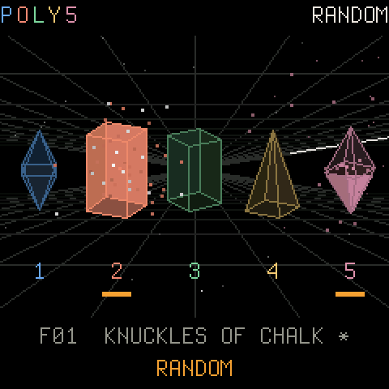
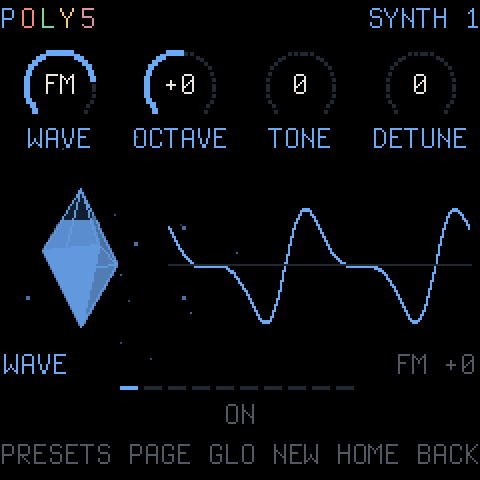
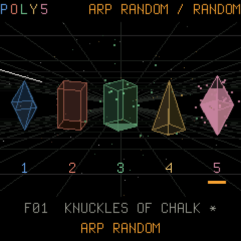
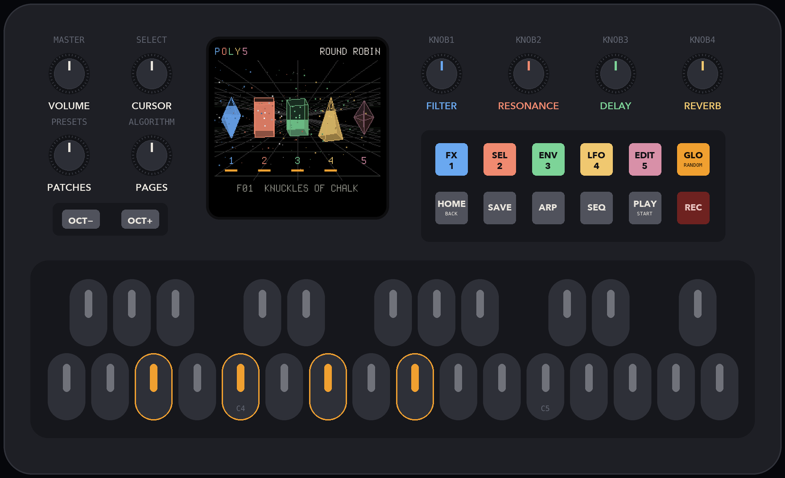
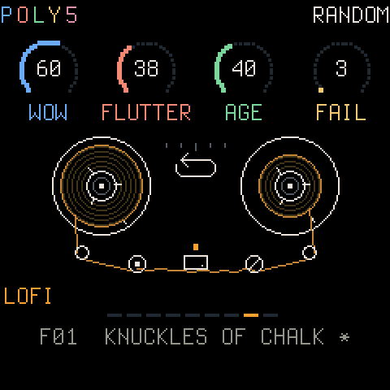
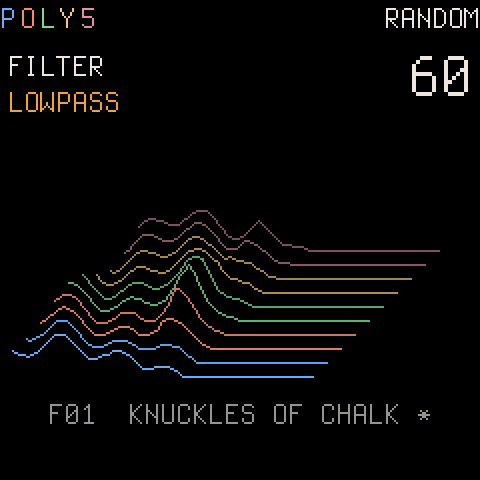
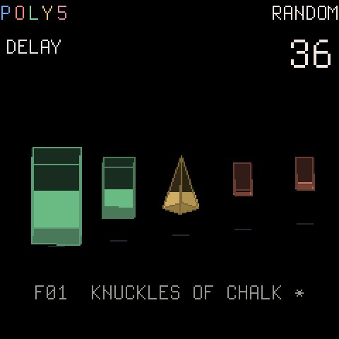
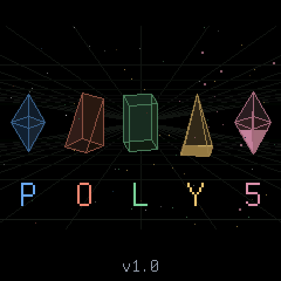
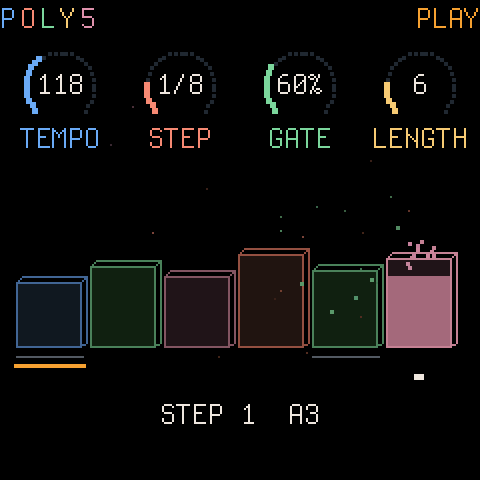
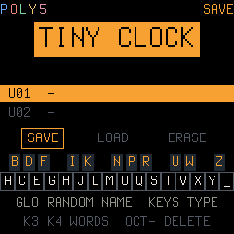

The key to everything
Random
POLY5 is built around chance. Three things can be left to it, and you keep what you love.
Random play mode
Hold ARP for half a second until it says RANDOM. Each note jumps to a random synth, never the same one twice in a row. Start the sequence and the same six notes come out differently every pass.

Random sounds
Press GLO and all five synths get a brand new sound: wave, filter, envelope, noise. Keep pressing until something makes you smile. On a synth's page, GLO re-rolls only that one.

Random arpeggio
Tap ARP until it says RANDOM and hold a chord. Its notes come in a random order, each from a random synth. Chance on chance.

Chapter 2 of the video manual: Random, the key to everything (71 s). Found something good? SAVE SAVE keeps it.
Playing
The panel
POLY5 is played from the FM‑1's own panel: the 27 keys, seven rotaries and fourteen buttons. The five buttons in the middle row are the five synths, in their colours.

Play modes
Hold ARP to step through them. POLY5 starts in round robin.
Buttons
| Button | Tap | Hold | On a synth's page |
|---|---|---|---|
| FX SEL ENV LFO EDIT | Open synth 1–5's page. It stays open; the same button again goes back. | Back to the home screen, or another synth's page | |
| GLO | Random sounds: five new synths | A new sound for this synth only | |
| ARP | The arpeggiator's style: off, up, down, up-down, random, as played, climb, chord | The play mode | |
| SEQ | The sequencer's page | ||
| PLAY | Start and stop the sequence (it flashes on the beat) | This synth ON, SILENT or SKIP | |
| REC | Stopped: step entry. Playing: record live. | 1.2 s: clear the sequence | |
| SAVE | The save page; there, SAVE again does it | ||
| HOME | From an effects page back to PLAY; leaves the save page | Back to the home screen | |
| OCT− OCT+ | The keyboard's octave, two each way | This synth's octave |
Rotaries
| Rotary | Home screen | A synth's page | Sequencer page |
|---|---|---|---|
| KNOB1–4 | Filter (left lowpass, right highpass), resonance, delay, reverb. On an effects page: its four dials. | The page's four dials | Tempo, step length, gate, length |
| ALGORITHM | Turn the effects pages. With the cursor showing: that synth ON, SILENT or SKIP. | Noise, on every page | The step's note |
| SELECT | A cursor on the synths (in POLY, the one the keys play) | The wave: saw, square, triangle, sine, FM, metal | The step |
| PRESETS | The patches: F01–F24, then yours, U01–U32 | Its ten pages | |
| MASTER | Volume | ||
On, silent, skip
Shape the round robin. Turn SELECT and a cursor appears over a synth; turn ALGORITHM and it goes SILENT (it still takes its turn but makes no sound: a rest in the rhythm) or SKIP (left out of the cycle, so the pattern lands differently).
A synth's page
Five synths, each its own
Press a synth's button and its page opens: the keys play only that synth, and the four dials at the top follow KNOB1 to KNOB4. PRESETS turns its ten pages, round and round:
- Wave
- Amp envelope
- Filter envelope
- Filter
- LFO
- Noise
- Saturation
- Modulation
- Delay
- Reverb
ALGORITHM is its noise on every page: a little breath, hiss or static in the sound. Chance and noise are POLY5's two secret weapons.
Effects on everything
Worn tape and a hall
On the home screen, ALGORITHM turns through eight effects pages, each with four dials and its own picture. HOME jumps back to PLAY.
| Page | The four dials |
|---|---|
| Saturation | drive, type (soft, hard, fold), volume, on/off |
| Filter | sweep (lowpass, open, highpass), resonance, on/off |
| Modulation | type (chorus, flanger, phaser), speed, depth, mix |
| Delay | amount, time, repeats, on/off |
| Reverb | amount, size, damping, on/off |
| Bit reduction | bits, rate, mix, on/off |
| Lofi | wow (slow drift), flutter (fast tremble), age (duller), fail (dropouts and hiss) |
| Mastering | compressor, release, gain, on/off; a limiter is always on |

The quick knobs
On PLAY, the four knobs are filter, resonance, delay and reverb for the whole mix. The one you turn takes the screen for a moment.
The spectrum as ridges in the five colours, cut where the filter cuts.

Each note you play as its synth's shape, and its echoes one delay time apart.

The five synths spring up out of the grid, one for each letter of POLY5, with the version under them.


Sequencer and arpeggiator
Every patch has a sequence
SEQ opens its page and PLAY starts it. Each step goes through the play mode like a key press, so round robin hands the pattern round the five synths, random scatters it, and a silent synth makes a rest. Thirteen of the factory sequences have chords.
Write your own: hold REC to clear, tap REC while stopped for step entry (play a note or chord, let go, the cursor moves on; SELECT leaves a rest), or tap it while playing to record live. MIDI clock sets the tempo and starts and stops it.
The arpeggiator: tap ARP and hold a chord. Up, down, up-down, random, as played, climb, chord: at the sequencer's tempo, and through the play mode too.
Saving
Save, save
Nothing saves itself. What you play is a working copy, and a * after the patch name means unsaved changes.
SAVE opens the save page: KNOB1 picks the slot (U01–U32), KNOB2 what to do (save, load, erase), KNOB3 and KNOB4 the name's two words. SAVE again stores it. So SAVE SAVE always keeps what you hear; overwriting another patch or erasing asks once more.
Your patch keeps its sequence. The patch and octave you were on are kept when you switch off.

24 factory patches
The patches
Lofi, melodic, in the manner of Boards of Canada, Bonobo, Tycho and Porter Robinson's Nurture. Each has its own sequence.
| # | Name | Mode | What it is |
|---|---|---|---|
| F01 | Knuckles of Chalk | ROUND ROBIN | Five keyboards for chords: FM piano, soft saw, hollow square, warm triangle, a bell; heavy wow and flutter |
| F02 | Ladder of Wax | RANDOM | An old polysynth that swells in and holds, badly drifting tape |
| F03 | Climbing the Echo | RANDOM | Harp, nylon guitar, kalimba, music box, ringing in a long delay |
| F04 | That Never Climbs Back | UNISON | Detuned pad, a wash of hiss swept over four bars, huge reverb |
| F05 | Gravity's Lawyer | UNISON | One thick keyboard: FM, saw, square, sub, hissy triangle on top |
| F06 | Billing My Falls | RANDOM | Cassette drum kit: soft kick, FM rim, noise snare and hat, low tom |
| F07 | Taught Me to Orbit | ROUND ROBIN | Swells and wind; synths 2 and 5 silent, so the rests are built in |
| F08 | Ungraspable Walls | POLY | Worn FM piano on the keys; bass, kalimba, lead and hat on MIDI channels 2–5 |
| F09 | Coroner's Tongue | ROUND ROBIN | Bright detuned saw plucks, pumping compressor |
| F10 | Wrapped in Tin | RANDOM | Toy piano and music boxes, thin, a little crushed |
| F11 | Grief Goes Viral | ROUND ROBIN | Soft felt piano with breath in it, long room |
| F12 | Before It Begins | UNISON | Wide saw pad rising slowly, phaser |
| F13 | Lanterns of Static | ROUND ROBIN | Static in every voice moves the filters; worn tape |
| F14 | Hung from the Pews | RANDOM | Small church organ in a fast chorus, a hall |
| F15 | Pulpit's a Mirror | ROUND ROBIN | Warm singing lead and plucks in a dotted-eighth delay |
| F16 | Laughing at You | RANDOM | Chopped-voice chirps: resonant plucks that fall onto the note |
| F17 | Ballot of Rumors | ROUND ROBIN | Plucked bass and guitar figures, filters in time, flanger |
| F18 | Signed in Milk | ROUND ROBIN | Lullaby: round sines, triangles, soft bells, thick chorus |
| F19 | Velvet the Motive | UNISON | Brassy detuned lead whose filter opens after the note; heavy wow |
| F20 | Gospel the Guilt | RANDOM | Electric pianos and a small choir of slow bandpassed saws |
| F21 | Fingertips Counting | ROUND ROBIN | Crisp short plucks made for the arpeggiator (arp up) |
| F22 | Doors Made of Hum | ROUND ROBIN | Low drones that rise slowly and beat against each other |
| F23 | Knocking in Latin | RANDOM | Wood: marimba, kalimba, wood block, log drum (arp random) |
| F24 | Answered in Drum | RANDOM | Crunchy drum kit: kick, clap, hat, tom, rim; crushed and driven |
Video manual
Learn it in eight minutes
Eleven short chapters, made from the firmware itself: the screen and the sound are POLY5 running, the panel lights up what is pressed. Or watch them all in one.
Install
Put it on your FM‑1
POLY5 runs on Dinghy, an open platform for the FM‑1. Build the firmware and send it over USB:
git clone https://github.com/questron5000/poly5.git
cd poly5/dinghy
APP=poly5 ./build.sh
python3 tools/fm1_install.py build/dinghy.fwsc --port FM-1 --yesBuilding needs Docker, the JieLi toolchain (tools/get_toolchain.sh) and the AC79 SDK. Hold OCT− while switching on to get back to the update mode if anything goes wrong.
Try it without the device: APP=poly5 tests/run_host.sh tests/scripts/poly5.txt runs the same firmware on your computer and writes the sound as WAV and the screens as PNG.